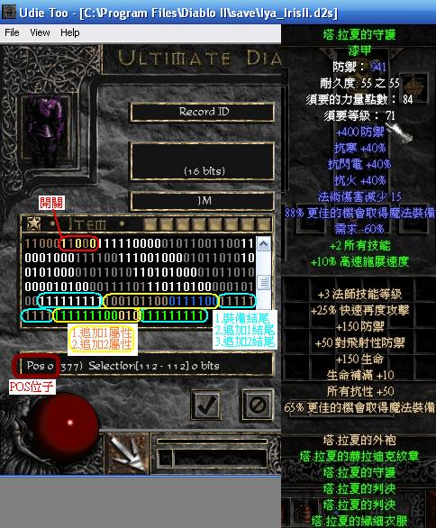

UdieToo 物品修改教學
| ID修改 | 增加洞數 | 製造無形裝備 | 添加技能 |
| 靈氣賦予 | 殺死怪物復活為 | 製造自動回復的箭矢 | 裝備特效 |
| 匯入裝備 | 匯出裝備 | 無限箭矢 | 更改物品類型 |
| 新增套裝各部追加效果 |
進入物品修改(Edit Item)後
由右邊上方視窗的8個黃色方塊內
可修改物品的ID
8個方塊分別代表
增加屬性 帶入符文組 帶入魔法字首 帶入魔法字尾
帶入稀有字首 帶入稀有字尾 帶入獨特屬性 無
選取需要的ID即可修改
參考文件: 魔法字首 魔法字尾 稀有魔法字首字尾 獨特裝備與符文組名稱
需要移除屬性
可用左方中間第2個方塊
即可移除物品的屬性
第1個方塊 則是移除物品的ID
進入物品修改(Edit Item)後
選許左邊中間第3個方塊
然後再填入洞數即可
進入物品修改(Edit Item)後
在中間方塊內找出Ethereal
在第38格(POS38) 最下方的黑框有註明
點選中上方的FALSE修改即可
( 0= 有形 1= 無形)
此修改是添加無職業限制技能
例如:謎團的傳送
進入物品修改(Edit Item)後
選取右邊上第一個方塊
然後找到 Non Class skill (97.無職業限制技能)
加入後在物品內找出Non Class skill
會發現有3格
1.Property Code 97 (不理他)
2.Skill Id 511 (技能ID 511=無 )
3.Level 63 (增加多少技能)
依需求 斟酌修改2.3即可
參考文件: UdieToo 技能中英對照
此修改是直接裝備賦予靈氣
例如:野獸的狂熱
進入物品修改(Edit Item)後
選取右邊上第一個方塊
然後找到 Aura (151.靈氣賦予)
加入後在物品內找出Aura
會發現有3格
1.Property Code 151 (不理他)
2.Aura Id 511 (技能ID 511=無 )
3.Level 31 (賦予幾級靈氣)
依需求 斟酌修改2.3即可
PS:只有賦予聖騎士類的靈氣有效
參考文件: UdieToo 技能中英對照
進入物品修改(Edit Item)後
選取右邊上第一個方塊
然後找到 ReAnimate (155. 殺死怪物後復活為)
加入後在物品內找出ReAnimate
會發現有3格
1.Property Code 155 (不理他)
2.Monster Id 1023 (怪物ID 1023=無 )
3.% Change 127 (機率)
依需求 斟酌修改2.3即可
PS:怪物ID 可用MPQMaster D2 MPQ提取檔案
提取D2資料夾中的patch_d2.mpq
請將Diablo I.txt Diablo II.txt Lords of Magic .txt 3個方塊打勾 然後進入
將data/global/excel內的monstats.txt按右鍵選第3個Extract將怪物資料提取出來
提取出怪物資料檔後請用D2Excel D2 MPQ修改檔案開啟
請選擇Load .txt 然後讀取剛剛提取出來的monstats.txt
ID旁邊的hcidx則就是怪物的編號
進入物品修改(Edit Item)後
選取右邊上第一個方塊
然後找到 Replenish 1 Quantity In Seconds (253. 回復數量)
加入後在物品內找出 Replenish 1 Quantity In Seconds
會發現有2格
1.Property Code 253 (不理他)
2.(=1001#) Sec 63 (回復速度)
要最快速請維持數值63不動即可
此修改是裝備後呈現特效
例如:馬維娜的光芒
進入物品修改(Edit Item)後
選取右邊上第一個方塊
然後找到 state (98.特殊狀態,比如頭上永遠頂個經驗祭壇)
加入後在物品內找出 state
會發現有3格
1.Property Code 98 (不理他)
2.State Id 255 (255=無)
2.State 1 (不理他)
請將2的數字255改成175即可
參考文件: UdieToo 裝備特效中英對照
使用 UdieToo 單機存檔修改器 開啟存檔人物
在裝備欄中點選右鍵選擇 Import Item
然後開啟存放裝備的物品存檔即可
使用 UdieToo 單機存檔修改器 開啟存檔人物
在道具上點選右鍵選擇 Export Item
然後選擇到劇的存檔位子與檔名即可
進入物品修改(Edit Item)後
選取右邊上第一個方塊
然後找到 Throwable (125.可投擲)
加在弓&十字弓上面後 即為無限箭矢
進入物品修改(Edit Item)後
找出Item Type(會顯示在道具圖右邊第一個黑框)
第3個黑框 即使該道具的類型 點一下 就可修改
例如本來是項鍊 你要將他改成戒指的話
只要將 amu 改成 rin 即可
最後面 一定要有空白
就是 amu空白 改成 rin空白
建議防具互改 武器互改 裝飾互改
跳著改的話 你還要多改多有的沒的
例如項鍊改防具 你還要把他防禦生出來等等的
至於怎麼查編碼
你可以抓白色的來查
例如: 左邊隨便抓一件神聖盔甲 看他的Item Type 就知道神甲的編碼了
聽起來很複雜
但其實就像拼圖遊戲一樣簡單
以漆甲為例
首先先介紹幾個功能鍵
C = 複製 / P= 貼上 / insert = 游標 / Delete = 刪除
進入物品修改(Edit Item)後
在POS197-201 分別代表5個你能多追加的(POS最下方有顯示)
把要追加的改1 例如想要2個 就把197 198都改1 (197本來就開啟了 所以不用改)
再來加入要的屬性
例如+2全技能(將7改2 在POS211)
然後在POS202的地方按insert出現遊標
把新加入的屬性框起來(POS202-POS214)
按C複製後 然後按Delete刪除
在結尾按P貼上(最後方pos347)
然後寫入套裝2的結尾(POS368的地方按9次1)
要追加2.3.4.5方法都一樣
記得寫入結尾
內建無擴展的不用改
改了也不會展現
例如:牛魔王全套.不朽頭
成品圖
